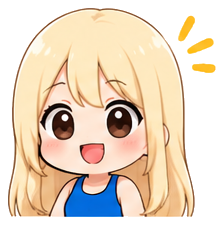

第1章「気づく」
① 私はなぜ
痩せたいのか？
一生ダイエッター卒業プログラム
— 痩せようとしない、心を整える 3ヶ月 —

この章が、
いちばん大事
です
ここでの気づきがないと、この先どんなワークも、表面的なテクニックで終わってしまう。
最初の質問
なぜ、あなたは
痩せたいんですか？
……パッと答えられましたか？ それとも、少し詰まりましたか？
「見た目のため」
「健康のため」
— その言葉の
奥
に、
もっと別の理由が隠れていることが、とても多い。
私自身の話
やってきたのに、続かなかった
ダイエットに300万円以上
ライザップ
マインドコーチング 3ヶ月 30万円
何度もリバウンド
ゴールが曖昧なまま走ると、
人は必ず
息切れ
する
「痩せること」がゴールになっていて、痩せたら本当は何が欲しいのか、が曖昧だった。
「痩せたい」の裏に
隠れているもの
好きな服が着たい
人と比べて、落ち込みたくない
太っている自分を見られたくない
「痩せたら、もっと愛される」
どれも、
「今の自分」を否定する
ところから始まっている
太ることは、自分自身を守るための
無意識の行動
こんなとき、
食べることで安心を得ようとする
仕事で頑張りすぎて、心に余裕がない
子育てに追われて、自分の時間が取れない
ストレスを、誰にも相談できず抱え込んでいる
痩せられないのは、
意志が弱いから
じゃない
あなたの心が、今、そうせざるを得ない状態にある。ただ、それだけ。
「痩せないと愛されない」は、
思い込み
あなたは今のままでも、愛される価値がある人です。（次の動画で詳しく）
3つの問い
今日は答えを出さなくて大丈夫。心の中で考えてみてください。
最後に「痩せたい」と強く思ったのは、いつ？ きっかけは？
もし痩せられたら、具体的に何が変わると思う？
今の体型のままでも、できることは何だろう？
「痩せたい」の奥には、
必ず、あなたの
感情
がある
それに気づくことが、頑張らなくても変わっていく、最初のステップ。
今日のワーク
💗 自己理解ワークシート ①
「なぜ私は痩せたいのか」を、きれいな言葉にしようとせず、本音のまま書き出してみてください。
支離滅裂でも大丈夫。「あ、私、本当はこう思っていたんだ」— そんな発見が、第一歩です。
次回
② 食べることで
埋めている感情
太ることで自分を守っている心理を、さらに深く見ていきます。
それでは、
また次の動画で。
1 / 17
← → / スペース：めくる F：全画面